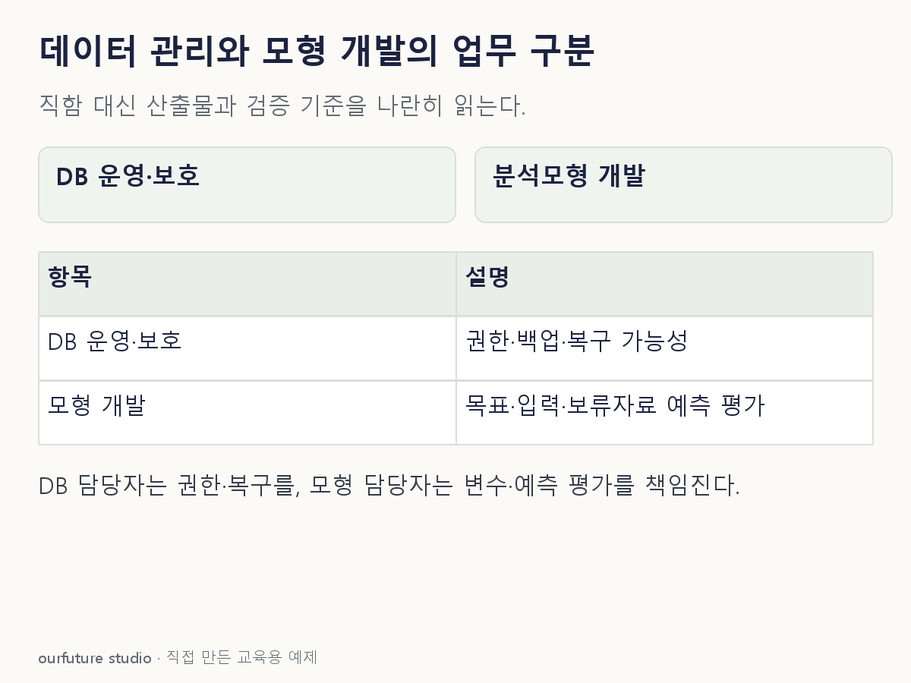

조건을 바꾸며 확인하기
직함이나 조직도를 확정하지 않는다. 조직에 따라 담당을 나누고 협업할 수 있다.
설명 그림과 비교하기
아래 그림과 표는 고정된 설명 예제입니다. 기본·변형 중 어떤 조건인지 캡션을 읽고, 바꾼 입력의 결과는 계산 칸에서 확인하세요.

같은 문제를 직접 골라 보기
DB의 사용자 권한과 백업·복구를 맡긴다.
조건을 더 바꾸면?
요구를 “다음 달 이탈 확률을 예측할 모형의 변수를 정하고 검증”으로 바꾸면?
변형 풀이 확인
분석모형 개발 업무가 직접 대응한다.
데이터를 사용할 수 있게 유지하는 책임에서, 데이터를 이용해 예측 규칙을 만드는 책임으로 바뀌었다.
직함보다 권한·복구·예측처럼 실제 업무를 본다.